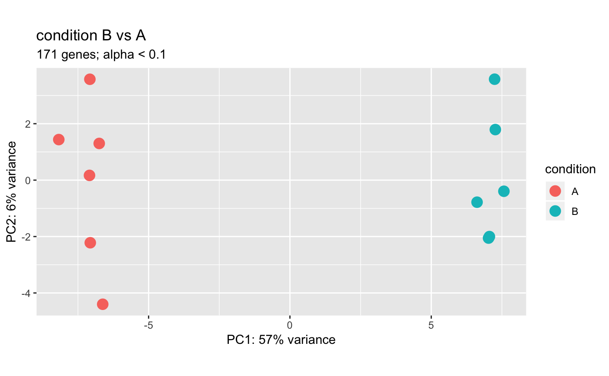

R/plotDEGPCA-methods.R
plotDEGPCA.RdThis function is an extension of plotPCA() that is
optimized for automatic handling of differentially expressed genes, rather
than requiring manual input of a gene vector or subset object.
# S4 method for DESeqResults plotDEGPCA(object, counts, direction = c("both", "up", "down"), object, assay = 1L, interestingGroups = NULL, label = getOption(x = "acid.label", default = FALSE), color = getOption(x = "acid.color.discrete", default = acidplots::scale_colour_synesthesia_d()), pointSize = getOption(x = "acid.point.size", default = 3L), return = c("ggplot", "DataFrame"), ...) # S4 method for DESeqAnalysis plotDEGPCA(object, results, contrastSamples = FALSE, direction = c("both", "up", "down"), assay = 1L, interestingGroups = NULL, label = getOption(x = "acid.label", default = FALSE), color = getOption(x = "acid.color.discrete", default = acidplots::scale_colour_synesthesia_d()), pointSize = getOption(x = "acid.point.size", default = 3L), return = c("ggplot", "DataFrame"), ...)
| object | Object. |
|---|---|
| counts |
|
| direction |
|
| assay |
|
| interestingGroups |
|
| label |
|
| color |
We generally recommend these hexadecimal functions from the viridis
package, in addition to our Alternatively, colors can be defined manually using hexadecimal values
(e.g. |
| pointSize |
|
| return |
|
| ... | Additional arguments. |
| results |
|
| contrastSamples |
|
To adjust the annotation columns, modify the
colData() of the counts argument, which
must contain/extend a SummarizedExperiment.
#>#>#>